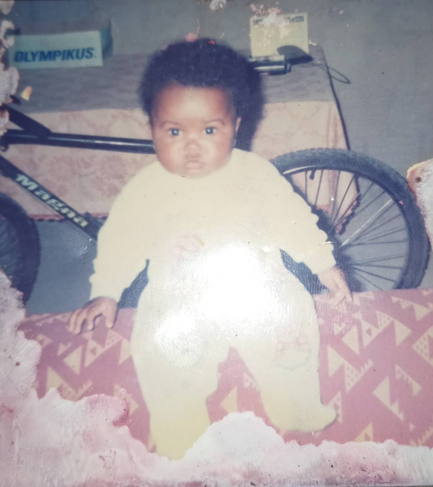
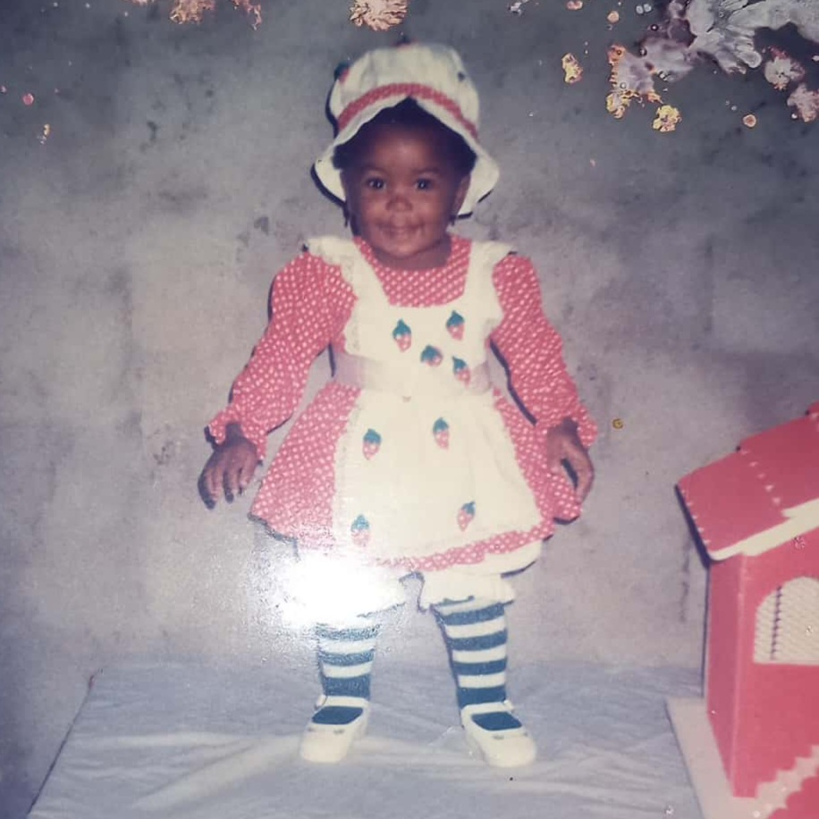

dev front-end :)

Olá! Me chamo Nayane Souza, tenho 25 anos e sou desenvolvedora front-end.
Nasci e cresci na cidade do Rio de Janeiro e desde criança sempre tive
curiosidade para o mundo das artes, pintura, escultura e literatura.
Quando a maioridade chegou, e tive que escolher uma carreira, não haviam
dúvidas, iria para o mundo da escrita, ingressei no curso de Comunicação
Social da UFRJ, mas as coisas não estavam completas. Alguns anos antes,
tive contato com programação e, apesar de ter me apaixonado pela área,
o mundo de tecnologia não parecia,
naquele momento, o lugar certo para mim.

Em 2022 eu percebi que, apesar de amar a Comunicação, eu não estava
feliz trabalhando na área e não me sentia mais confortável na minha
carreira. No final daquele ano, tive a oportunidade de voltar a estudar programação
e resolvi entrar de cabeça e conquistar meu espaço dentro do mercado. Hoje eu
estou voltando a aprender a aprender como a Nayane criança e estou focada
e ansiosa para entrar nessa nova jornada.